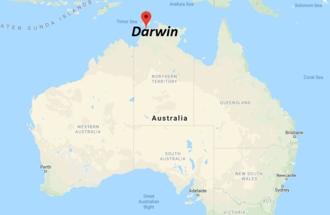

| About Darwin | Why Study in Darwin | Darwin Festival | Darwin Street Art Festival | Contact Me |
The capital of the Northern Territory and the hub of northern Australia, Darwin has a distinctive Top End vibe thanks to its young, eclectic and cosmopolitan population (which is around 132,000), its somewhat turbulent history and its geographical setting. With its proximity to Asia, Darwin has long held aspirations of becoming a consequential city of international trade, and with the recent rail link to southern capitals this goal may well be realised.

While the future looks bright, there are lessons and legacies from the past. Darwin has endured total makeovers several times since its settlement in 1861 thanks to more than a few destructive cyclones and a barrage of Japanese bombs during WWII. Rebuilt and revitalised over subsequent decades, Darwin has developed into a vibrant multicultural centre that remains intimate because of its small size, as well as retaining a frontier atmosphere because of its indisputable remoteness from the majority of Australia’s population.
Darwin’s pre-eminent asset is its proximity to iconic Australia, a less-trampled land of endless horizons, fascinating indigenous culture, postcard landforms and amazing wildlife. Not surprisingly, Darwin is a major stop for travellers, with a constant flow of them coming and going from Asia, or making their way around Australia. So hang around, take in the vibe and explore the backyard, the famous national parks of Kakadu and Litchfield with their rugged landscapes, idyllic waterfalls and unique wildlife, and discover the people, culture and art of the nearby Tiwi Islands and Arnhem Land.
Motivational Quote: